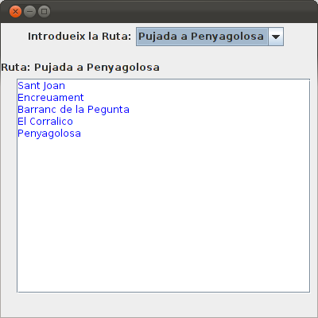
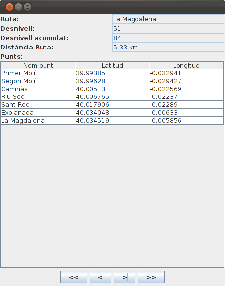
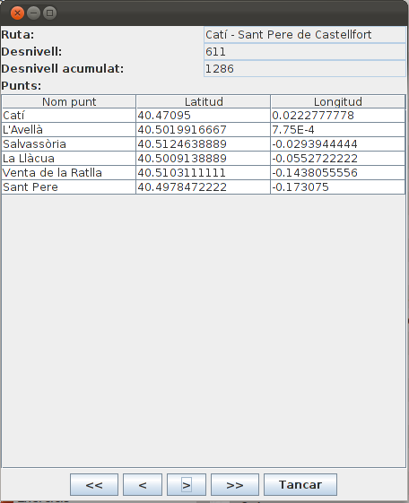

Exercicis
Exercici 8.0 (voluntari) (PostgreSQL)
Modifica (ampliant-la) la sentència de l'apartat 3.7 per a guardar en un únic document XML les comarques de la taula COMARQUES. En cada comarca hauran d'aparèixer tots els seu pobles (taula POBLACIONS), i en cada poble tots els seus instituts (taula INSTITUTS).
Exercici 8.1 (voluntari) (PostgreSQL)
Dins de la BD pròpia de cadascú (la mateixa ja utilitzada en el Tema 6; si no tens clar quina és, contacta amb el teu professor) crea una taula anomenada DOC_XML amb 3 camps:
- num (de tipus serial, que és l'autonumèric) que contindrà el número del document. Ha de ser clau principal.
- nom (de tipus cadena) que contindrà un nom per al document.
- doc (de tipus xml) que contindrà els documents XML
Puja la sentència de creació de la taula.
Exercici 8.2 (voluntari) (PostgreSQL)
Fes un programa en Java (en el projecte Tema8_1, en un paquet nou anomenat Exercicis) anomenat Ruta_XML_PostgreSQL que guarde en la taula creada en el punt anterior el contingut del document Rutes.xml ja fet en anteriors exercicis (i que et proporcionarà el professor). El nom del document podria ser Rutes, i el número no li l'has de proporcionar, ja que és un autonumèric.
Exercici 8.3 (voluntari) (PostgreSQL)
Fes un programa dins del mateix projecte i paquet anomenat Vis_Rutes_XML (i el JFrame: Vis_Rutes_XML_Pantalla) que aprofite les llibreries gràfiques Awt i Swing per a mostrar les rutes i els seus punts guardades en la taula DOC_XML del punt anterior, d'una forma molt similar a l'exercici 3.4 del tema 3.
Observa que es tractarà d'accedir al document XML guardat en la Base de Dades PostgreSQL, però no cal guardar tota l'estructura, sinó que és suficient amb la recerca de determinades coses:
- Per al JComboBox s'han de buscar els noms de les rutes.
- Per al JArea el nom dels punts de la ruta seleccionada.

Exercici 8.4 (voluntari) (PostgreSQL)
Intenta fer l'exercici 6.5 , però ara accedint als document XML de la Base de Dades PostgreSQL. Anomena'l Vis_Rutes_XML_PostgreSQL_Complet

Intenta traure concusions sobre quina manera és més còmoda.
Exercici 8.5 (eXist)
Realitzar les expressions XPath que tornen les següents qüestions (totes elles sobre Rutes.xml):
- Traure el nom de totes les rutes.
- Traure el nom de les rutes amb un desnivell major que 600 m.
- Traure les rutes en les quals el desnivell acumulat duplica el desnivell. (Observació: quan en una condició combinem alguna operació amb una comparació, és millor posar l'operació abans de l'operador de comparació)
- Traure el nom del primer punt de cada ruta.
- Traure el nom de l'últim punt de cada ruta
- Traure els punts de la tercera ruta.
- Traure el número de punts de la tercera ruta
- Traure el nom de les rutes que tenen estrictament més de 5 punts.
- Traure la mitjana de desnivell de les rutes
- Traure les rutes en les quals hi ha alun punt més avall del paral·lel 40
Exercici 8.6 (eXist)
Fer les expressions XQuery per a aconsequir:
1. El mòdul amb el nom del professor com a atribut:
<modul professor="Joan Puig">Llenguatges de Marques</modul>
2. El nom de cada ruta amb el número de punts com a argument:
3. Cada ruta amb el nom com a atribut, la latitud mitjana dels seus punts i la longitud mitjana
4. La mitjana de punts de les rutes
6
5. Quants punts de cada ruta estan en l'hemisferi est (és a dir, longitud positiva)
Exercici 8.7 (eXist)
En el projecte Tema8_2, i en un paquet nou anomenat Exercicis, fer un programa similar a l'exercici 6.4, però aquesta vegada accedint a la Base de Dades XML-Nativa eXist:

En aquesta ocasió la connexió serà permanent, fins apretar el botó de tancar. Observeu com els objectes s (XQDataSource), conn (XQConnection) i rs (XResultSequence) estan declarats al principi per no perdre la connexió.
Ens aprofitarem dels mètodes de moviment (first(), previous(), next(), last()) per a menejar-nos d'una ruta a una altra, i per tant s'ha de poder permetre el moviment cap avant i cap arrere.
Observeu com el mètode plenar_taula(element) ha canviat. Us pot servir de model per a emplenar les altres coses, i observeu com se li ha de passar un element DOM (l'element punts).
Aquest classe es pot dir Vis_Rutes_XML_eXist_Pantalla.java. I recordeu que heu de tenir una altra classe amb el mètode main que invoque a Vis_Rutes_XML_eXist_Pantalla.iniciar()
Llicenciat sota la Llicència Creative Commons Reconeixement NoComercial CompartirIgual 2.5